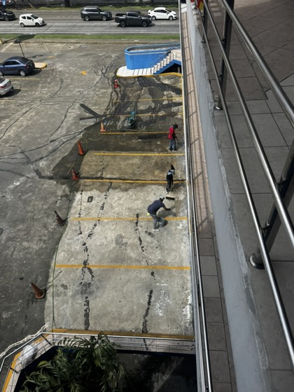

Membrana continua de poliurea pura. Sin juntas, sin parches, curado en segundos.
Escríbanos por WhatsAppDesempeño medible del material, no adjetivos de marketing.
Es un polímero que reacciona, no que se seca: no cura por evaporación como una pintura o membrana acrílica — reacciona y forma una membrana sólida en segundos, sin importar la humedad ni la temperatura ambiente. La diferencia se nota en la primera lluvia.
Pintura cubre. La poliurea sella.
| Acrílico | Espuma PU | Poliurea | |
|---|---|---|---|
| Vida útil | 2–5 años | 5–10 años | 15–25 años |
| Curado | Días | Horas | ≤4 segundos |
| Juntas | Requiere refuerzos | Entre cada paño | Cero — membrana continua |
| Garantía | No estructural | Limitada | Por escrito |
Si ya tuvo que reparar su techo más de una vez, el problema no es el contratista. Es el sistema.
No son adjetivos — son consecuencias directas de cómo cura y se comporta el material.
Cura en segundos. Se aplica por secciones sin cerrar el edificio, la planta o el negocio.
18 MPa de resistencia a tracción — soporta pisos industriales y azoteas transitables a diario.
380% de elongación. Se mueve con la estructura ante expansión térmica y movimiento del sustrato.
Una sola aplicación, sin uniones entre paños — cero puntos de falla futura.
Cinco pasos, registro real de obra. Sin diagnóstico no hay cotización seria.

Todo empieza con un diagnóstico del sustrato y del problema real. Sin costo, sin compromiso.

El 50% del trabajo pasa antes de la primera gota: limpieza, reparación de grietas y perfil de anclaje.

Imprimación correcta = adherencia garantizada al sustrato.

Poliurea pura proyectada con equipo Graco de alta presión. Cura en 4 segundos.

Membrana continua. Sin uniones. Garantía por escrito.
Nada de tarifa de catálogo. El precio depende del sustrato, el acceso y el área real de su proyecto.
130 m² de losa de estacionamiento con filtración activa hacia niveles inferiores. Concreto expuesto, manchado por filtración constante — impermeabilizados en un día.
Aplicación real, en proceso, sin cortes
Cada proyecto se cotiza por separado, según sustrato, acceso y área real — no hay tarifa de catálogo. Partimos de una base de 45 m² para el diagnóstico inicial.
No. Evaluamos su superficie y le damos un diagnóstico técnico sin costo ni compromiso antes de cotizar.
La poliurea cura en segundos. La superficie queda transitable el mismo día, a diferencia de sistemas convencionales que requieren días de secado.
No. El curado casi instantáneo permite aplicar por secciones sin detener la operación completa del edificio o la planta.
Sí. A diferencia de los sistemas que curan por evaporación, la poliurea reacciona químicamente — no depende del clima para sellar la superficie.
Sí. El sol panameño degrada el acrílico antes de lo anunciado por el fabricante; la poliurea mantiene su desempeño durante toda su vida útil.
Se adhiere a concreto, metal y la mayoría de sustratos con la imprimación correcta — por eso el diagnóstico revisa el sustrato antes de cotizar.
No hay un mínimo estricto. Partimos de una base de 45 m² para el cálculo, pero cada proyecto — grande o pequeño — se evalúa y cotiza por separado.
Envíe su ubicación, el área aproximada y una foto si la tiene a la mano. Sin costo, sin compromiso.
Escríbanos por WhatsApp